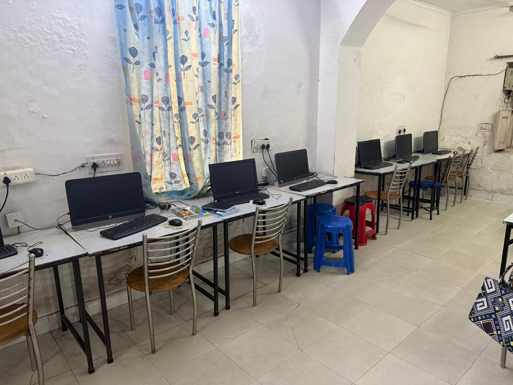

Build websites with no coding — using AI

Not long ago, putting a website online meant learning HTML, CSS, JavaScript, hosting and a dozen other things — or paying someone who had. That barrier is falling fast. With today's AI tools, a motivated beginner can design, build and publish a genuinely professional website without writing code from scratch. Here's how it works, and what's actually worth learning.
How "no-code with AI" actually works
The idea is simple: instead of typing code, you describe what you want in plain language, and AI-assisted tools generate the layout, text and structure for you. You then refine it visually — drag, edit, swap images — and the tool handles the technical parts underneath. A typical flow looks like this:
- Describe your site to an AI tool — what it's for, the pages you need, the tone.
- Generate a first version: layout, sections and starter content.
- Refine visually — edit text, replace images, adjust colours to your brand.
- Publish to a live web address, often in a single click.
Reality check: "no coding" doesn't mean "no thinking". The tool builds; you still decide structure, content and what makes the site actually useful to a visitor. That judgement is the real skill.
What AI website building does well
- Speed — a presentable site in hours, not weeks.
- Design — clean, modern layouts without a designer.
- Content — AI can draft headings and copy you then edit.
- Cost — far cheaper than hiring out a small business or portfolio site.
Where you still need to learn
The tools are powerful, but a few things separate a site that just exists from one that works:
- Structure & clarity — knowing what pages to have and what to say on each.
- Basic SEO — so people can actually find your site on Google.
- Editing AI output — AI drafts are a starting point, not a finished product.
- Publishing & domains — connecting a real web address and keeping it live.
This is exactly the gap a good course fills — teaching you to direct the tools well, rather than just clicking buttons and hoping.
Who should learn this?
Students who want a portfolio, small-business owners who need an online presence, freelancers, and anyone curious about a fast-growing skill. You don't need a programming background — just willingness to learn the workflow.
DIIT's AI Web Development track teaches you to build and deploy professional websites with AI — no coding from scratch — as part of our 45-day AI internship program. See the program or enquire now.